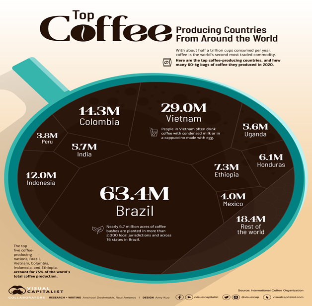
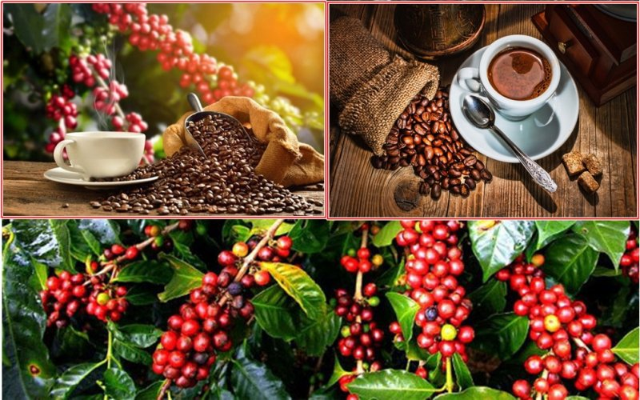
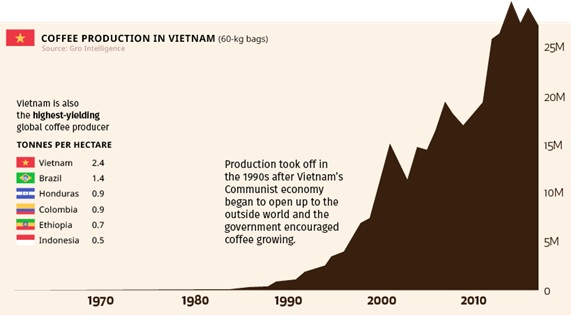

Where is Vietnamese coffee on the world coffee map?
Coffee is the third most consumed beverage in the world after water and tea. More than 600 billion cups of coffee per year. As of the end of 2020, the 10 largest coffee producing countries accounted for 87% of the market share of this commodity. This is a big industry.
In most cities around the world, coffee shops are around every corner, so it's no surprise that coffee is one of the world's top commodities. It is the third most consumed drink globally, after water and tea. Coffee beans are in high demand almost everywhere. According to the International Coffee Organization, a total of 169.6 million 60 kg bags of coffee were produced worldwide in 2020.

top-coffee-in-the-world
So why does the world love coffee so much?
Coffee lovers will tell you, drinking coffee is a complex and nuanced experience - with rich aromas, comforting warmth and loveliness of ritual and possibly space to enjoy. awake. Caffeine is what it gives us, it's not hard to see why the world loves it. In fact, we love drinks so much that people associate the bitter taste of coffee with a positive amount of energy…such as sparking creativity, fostering creative solutions…or many other beautiful words.
We explore the world's top coffee producing countries, to learn more about the 3rd largest consumed beverage in the world.
Meet the top coffee producing countries.
As of the end of 2020, the 10 largest coffee producing countries hold 87% of the market share of this commodity. More than 70 countries produce coffee, but the majority of global production comes from just the top five producers: Brazil, Vietnam, Colombia, Indonesia and Ethiopia. Let's join Huongmai Cafe to meet the top coffee producing countries through the article below.

vietnamese-coffee
Brazil
Brazil is a real powerhouse of coffee production. The country produces almost 40% of the world's coffee supply. Many areas in Brazil have a climate that is perfectly favorable for growing coffee. Coffee plantations cover about 27,000 square kilometers of Brazil, with the majority located in Minas Gerais, São Paulo and Parana. Brazil distinguishes itself from most other coffee-producing countries by drying the coffee beans in the sun (unwashed coffee) instead of washing them. The country is so influential on coffee production that the 60-kilogram burlap bag historically used to export coffee beans from Brazil remains the global standard by which to measure production and trade.
Vietnam
Vietnam has found a niche in the international market by focusing mainly on Robusta beans, which are cheaper. Robusta beans can have twice as much caffeine as Arabica beans, giving the coffee a more bitter flavor. Output skyrocketed in the 1990s after the Vietnamese government introduced economic (known as Doi Moi).
This chart shows the increasing level of coffee production in Vietnam, from the 1970s to 2010. Today, Vietnam accounts for more than 40% of the world's Robusta bean production. Growing coffee in Vietnam is also effective. Our country's coffee production is significantly higher than that of other leading coffee producing countries.
coffee-in-vietnam
The future of coffee production
With global temperatures rising, good coffee can become increasingly difficult to grow. Some studies have found wild coffee species growing off the coast of Côte d'Ivoire and in certain areas of Sierra Leone, which could be the answer to coffee production problems. The coffee from these coffee plants tastes similar to the famous Arabica beans and also grows at higher temperatures.
Coffee will also be harvested from laboratories, which is an interesting finding as the author himself, being a coffee lover himself, discovered this information when talking with some foreign friends who have the same idea. hobbies (even though they were in the media industry with the same author years ago).
comemnt